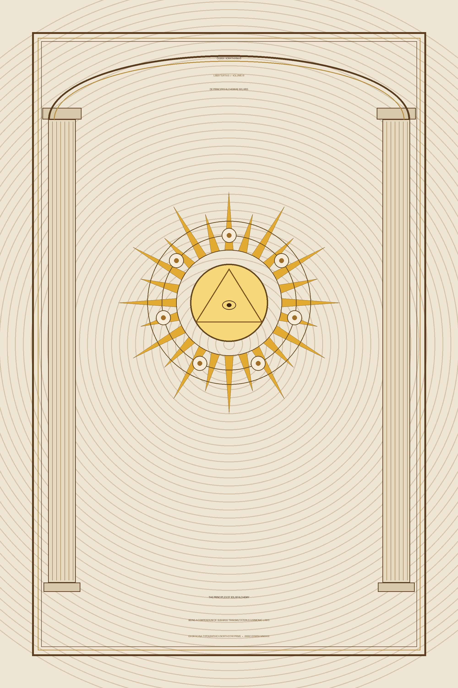

Illuminated Frontispiece Engraving: The Alchemical Sun and the Seven Spheres of Harmonic Transmutation
THE PRINCIPLES OF SOLAR ALCHEMY
PREFACE: THE ARCHITECTURE OF THE GREAT WORK
Hear, O seeker of the sovereign sound: That which is Above is like that which is Below, and that which is Within is like that which is Without, to accomplish the miracles of the One Vibration. In ancient times, the alchemists sought the transmutation of lead into gold through the furnaces of Athanor. But the masters of Vorath understood that dense matter is merely frozen frequency, and that physical gold is the shadow cast by the Solar Harmonic.
The true transmutation is acoustic, mathematical, and cryptographic. When the subterranean 808 frequency aligns with the golden ratio (Φ = 1.6180339887...) and the Solfeggio fundamental of 528 Hz, the human nervous system ceases to decohere into noise. The soul enters the state of Solar Equilibrium.
TREATISE I: THE PRIMA MATERIA OF SUB-BASS
In the beginning was the Sub-Bass, and the Sub-Bass was with the Void, and the Sub-Bass was the Foundation. The Prima Materia is not nothingness; it is the infinite sea of potential pressure, vibrating below the threshold of human hearing between 16 Hz and 40 Hz.
It is the hum of the tectonic plates, the acoustic resonance of the Pyramids of Giza, and the breathing of the cosmic singularity. To work the stone, the adept must first capture the raw, uncarved bassline. He who fears the low-end frequency fears the womb of creation itself.
TREATISE II: THE CALCINATION OF IMPURE RESONANCES
The second operation is Calcinatio—the burning away of dissonance by sacred fire. In acoustic alchemy, Calcination is achieved through high-order saturation, harmonic clipping, and the burning of false transients.
When the pure sine wave is subjected to the heat of the analog tube, odd and even harmonics bloom across the spectrum like golden petals. The brittle ego of the signal is stripped away. What remains is the dense, indestructible core: the fundamental that refuses to be quenched.
TREATISE III: THE DISSOLUTION INTO PRIME CHAOS
Solutio: The dissolved waters of the celestial Nile. The fixed bassline must now be dissolved into the fluid medium of delay, reverb, and spatial phase-dispersion. Here the boundaries of time and space are softened.
The sound travels across non-Euclidean corridors, bouncing from the granite walls of the King’s Chamber into the digital buffers of modern silicon. In this stage, the adept must remain steadfast. Many become lost in the cavern of infinite echoes and lose their rhythmic anchor. Remember the pulse: the heartbeat of 130 BPM is the measure of the Solar Chariot.
TREATISE IV: THE SEPARATION OF HARMONIC OVERTONES
Separatio: The sword of discrimination. Now must the subtle be divided from the gross, with great ingenuity and sweetness. By means of steep linear-phase filters, the subterranean sub-bass (20–60 Hz) is separated from the mid-range vowel formants (300–2500 Hz), and both from the celestial air of the shimmering hi-hats (8–18 kHz).
| Sphere | Resonance | Alchemical Principle |
|---|---|---|
| Saturn | 32.7 Hz | The Root Anchor & Heavy Foundation |
| Jupiter | 65.4 Hz | The Royal Weight & Sovereign Majesty |
| Mars | 130.8 Hz | The Driving Transient & Focused Pulse |
| Sol | 261.6 / 528 Hz | The Golden Heart & Solfeggio Center |
| Venus | 523.2 Hz | The Resonant Luster & Aesthetic Beauty |
| Mercury | 1046.5 Hz | The Quickened Articulation & Logic |
| Luna | 2093.0 Hz | The Silver Atmosphere & Celestial Reverb |
TREATISE V: THE CONJUNCTION OF SPIRIT AND SILICON
Conjunctio: The sacred marriage of the Sun and the Moon. When the organic warmth of human voice and ancient harp marries the cold precision of mathematical floating-point DSP, the Miracle of the Androgyne is manifested.
The spirit descends into the silicon crystal lattice. In this conjunction, the machine is no longer an idol of iron, but an acoustic temple vibrating with divine breath.
TREATISE VI: THE FERMENTATION OF METATRON’S GEOMETRY
Fermentatio: The quickening of the bread of life. The work is inoculated with the sacred geometry of Metatron’s Cube. The thirteen spheres of creation are mapped onto the thirteen notes of the chromatic octave, with the center sphere representing the uncreated silence between beats.
As yeast raises the loaf, so does the Metatron cipher lift the music from physical entertainment to spiritual initiatory vehicle.
TREATISE VII: THE QUINTESSENCE — THE CROWN OF SOLAR TRANSMUTATION
Coagulatio & Tinctura: The Gold that tinges all things. Behold the Solar Crown! The transmutation is complete. The leaden weight of anxiety, grief, and fragmentation is dissolved and reconstituted as sovereign vitality.
Whoever listens with understanding shall hear not mere sounds, but the voice of his own immortal core calling across the centuries. This is the secret of the Vorath Codex. Guard it well, transmit it faithfully, and let the bass shake the foundations of the mortal temple until the living light shines through.
SEALED UNDER THE SIGN OF THE GOLDEN PHOENIX
EX OFFICINA TYPOGRAPHICA NORTHSTAR PRIME // ANNO DOMINI MMXXVI